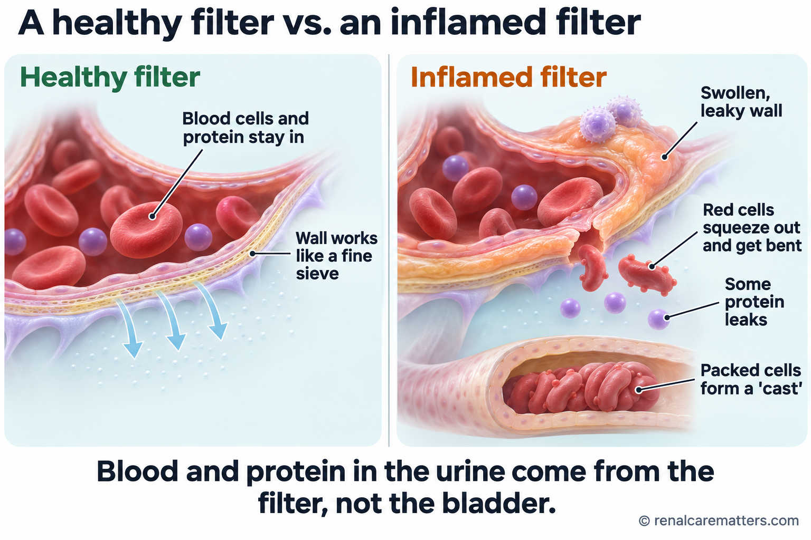
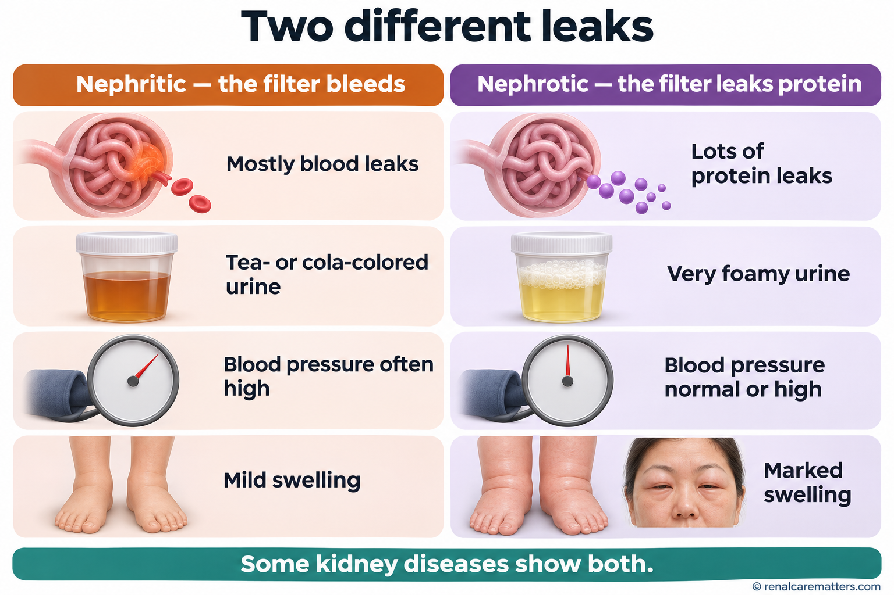
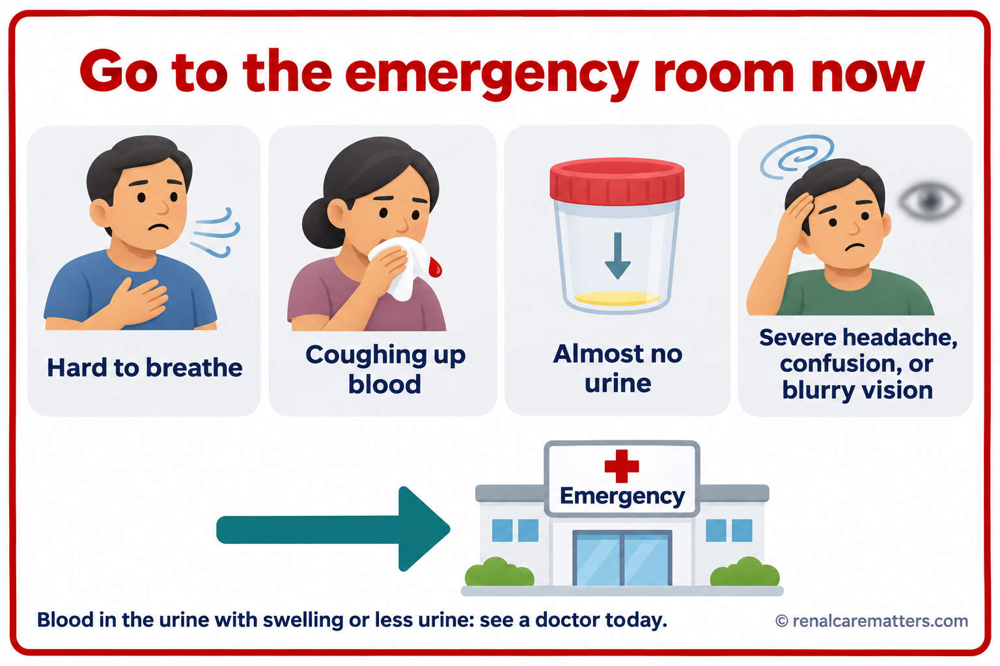
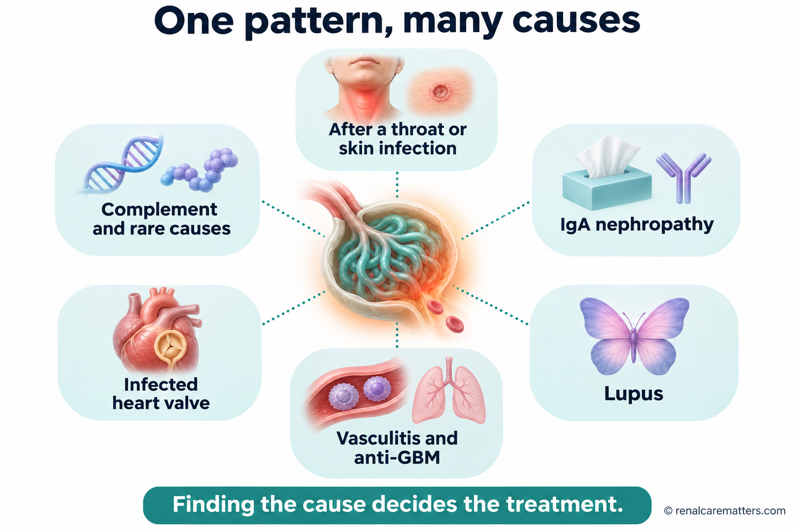
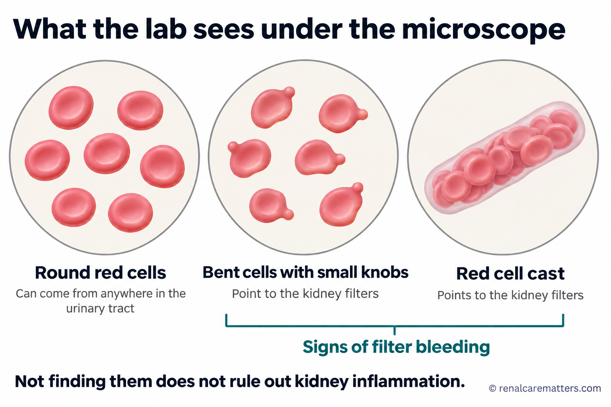
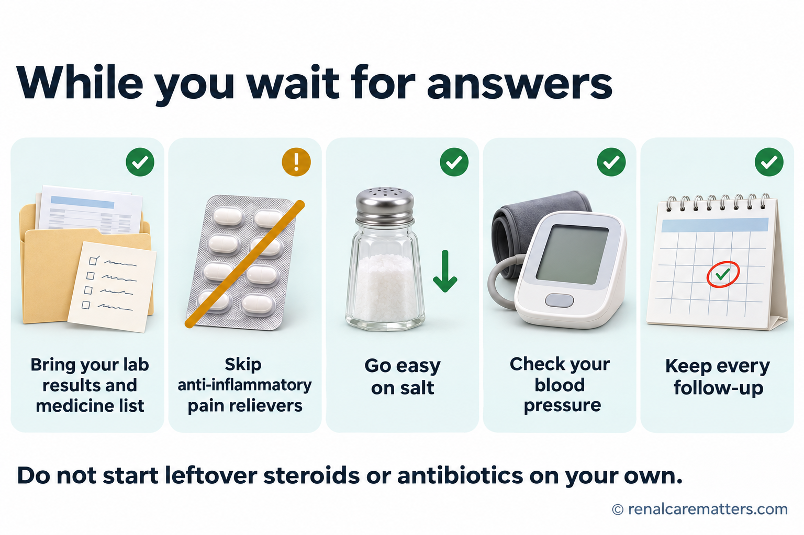

Inflamed kidney filters: what “nephritic” meansNamamagang salaan ng bato: ano ang ibig sabihin ng “nephritic”Nanghubag nga salaan sa kidney: unsa ang buot ipasabot sa “nephritic”Mamagang salaan ning bató: nanu ing kayulugan ning “nephritic”
Your kidneys have about two million tiny filters called glomeruli. When these filters become inflamed, blood and protein leak into the urine. Your urine may look like tea or cola, or it may look normal. Some people develop puffy eyelids or ankles, high blood pressure, or pass much less urine. Doctors call this pattern nephritic syndrome. It is a warning sign, not a final diagnosis: a urine test and blood tests show whether the filters are involved, and further tests find the cause.May humigit-kumulang dalawang milyong maliliit na salaan ang iyong bato na tinatawag na glomeruli. Kapag namaga ang mga salaang ito, tumatagas ang dugo at protina sa ihi. Maaaring magmukhang tsaa o cola ang ihi mo, o maaaring mukhang normal. May ilang namamaga ang talukap ng mata o bukung-bukong, tumataas ang presyon, o kumokonti ang ihi. Tinatawag ito ng mga doktor na nephritic syndrome. Babala ito, hindi pa huling diagnosis: makikita sa pagsusuri ng ihi at dugo kung apektado ang mga salaan, at hahanapin ng iba pang pagsusuri ang sanhi.Ang imong kidney adunay mga duha ka milyon nga gagmayng salaan nga gitawag og glomeruli. Kung manghubag kini nga mga salaan, mogawas ang dugo ug protina sa ihi. Mahimong murag tsa o cola ang imong ihi, o mahimong murag normal. Ang uban manghubag ang tabon sa mata o buolbuol, mosaka ang presyon, o mogamay ang ihi. Gitawag kini sa mga doktor og nephritic syndrome. Pasidaan kini, dili pa katapusang diagnosis: makita sa pagsusi sa ihi ug dugo kung apektado ang mga salaan, ug pangitaon sa ubang pagsusi ang hinungdan.Atin lang adwang milyun a malati a salaan ing bató mu, aus deng glomeruli. Nung mamaga la reni, tutulu ya ing daya ampo protina king ume. Malyari yang anti tsaa o cola ing ume mu, o malyari yang anti normal. Atin kareng mamaga ing pikit mata o bukung-bukung, mamuntuk ing presyun, o mekaunti ing ume. Aus de reng doktor iti a nephritic syndrome. Babala ya iti, ali ya pa ing tutung diagnosis: ing pamanyuri king ume ampo daya ing mamakit nung apektadu la reng salaan, at ing aliwa pang pamanyuri ing manintun king sanhi.
How a healthy filter works. Each glomerulus is a ball of very thin blood vessels wrapped in a three-layer wall. That wall is a precise sieve: water, salt, and small wastes pass through into the urine, while red blood cells and the large protein albumin stay in the blood. Think of it like a fine coffee filter that lets the coffee through but keeps the grounds back.Paano gumagana ang malusog na salaan. Ang bawat glomerulus ay bola ng napakanipis na ugat na binabalot ng pader na may tatlong patong. Eksaktong salaan ang pader na iyon: dumadaan sa ihi ang tubig, asin, at maliliit na dumi, habang nananatili sa dugo ang mga red blood cell at ang malaking protinang albumin. Parang pinong salaan ng kape na nagpapadaan sa kape pero pinipigil ang latak.Unsaon pagtrabaho sa himsog nga salaan. Ang matag glomerulus usa ka bola sa nipis kaayong ugat nga giputos sa bungbong nga adunay tulo ka sapaw. Eksakto nga salaan kana nga bungbong: moagi sa ihi ang tubig, asin, ug gagmayng hugaw, samtang magpabilin sa dugo ang mga red blood cell ug ang dakong protina nga albumin. Sama kini sa pinong salaan sa kape nga mopaagi sa kape apan mopugong sa lapok.Makananu ya gagana ing malusug a salaan. Ing balang glomerulus metung yang bola da reng manipis a ugat a balut ning pader a atlung patung. Eksaktung salaan ya ing pader a ita: dumalan king ume ing danum, asin, ampo malati a dinat, kabang mananatili king daya deng red blood cell ampo ing maragul a protina a albumin. Anti ya salaan ning kape a pasalan na ing kape dapot pigilan na ing latak.
What inflammation does. In nephritic syndrome, the immune system attacks the filter or dumps immune clumps into it. The inflamed wall develops tiny tears, and red blood cells squeeze through. As they push through the gaps, many come out bent and misshapen, and some get packed together into tube-shaped “casts” in the kidney’s drainage pipes. Finding these misshapen cells and casts under the microscope tells the doctor the bleeding is coming from the filters, not from the bladder or a stone. The coffee-filter picture has limits: a real filter wall is living tissue, so the swelling also slows filtering, and the kidney holds on to salt and water. That is why blood pressure rises and the face and ankles swell.Ano ang ginagawa ng pamamaga. Sa nephritic syndrome, inaatake ng immune system ang salaan o nagtatambak dito ng mga kumpol ng immune complex. Nagkakaroon ng maliliit na punit ang namamagang pader, at sumisiksik palabas ang mga red blood cell. Habang dumadaan sa mga puwang, marami ang lumalabas na baluktot at sira ang hugis, at ang ilan ay nagsisiksikan sa hugis-tubong “cast” sa mga daluyan ng bato. Kapag nakita sa mikroskopyo ang mga sirang selulang ito at mga cast, alam ng doktor na galing sa mga salaan ang pagdurugo, hindi sa pantog o bato sa daanan ng ihi. May hangganan ang paghahambing sa salaan ng kape: buhay na tisyu ang tunay na pader, kaya bumabagal din ang pagsasala at kumakapit ang bato sa asin at tubig. Kaya tumataas ang presyon at namamaga ang mukha at bukung-bukong.Unsa ang buhaton sa panghubag. Sa nephritic syndrome, atakehon sa immune system ang salaan o tapokan kini og mga pundok sa immune complex. Magkaroon og gagmayng gisi ang nanghubag nga bungbong, ug mosiksik pagawas ang mga red blood cell. Samtang moagi sa mga lusot, daghan ang mogawas nga baliko ug guba ang porma, ug ang uban magpundok sa porma-tubo nga “cast” sa mga agianan sa kidney. Kung makita sa mikroskopyo kining gubang mga selula ug cast, mahibal-an sa doktor nga gikan sa salaan ang pagdugo, dili sa pantog o bato sa agianan sa ihi. Adunay utlanan ang pagtandi sa salaan sa kape: buhi nga tisyu ang tinuod nga bungbong, mao nga mohinay usab ang pagsala ug kuptan sa kidney ang asin ug tubig. Mao nga mosaka ang presyon ug manghubag ang nawong ug buolbuol.Nanu ing gagawan ning pamamaga. King nephritic syndrome, atakian ning immune system ing salaan o tambakan de reng kumpul ning immune complex. Mika malati a pirasu (tears) ing mamagang pader, at sisiksik la palwal deng red blood cell. Kabang dadalan la king lugal, dakal ing lumual a baluktut at sira ing itsura, at deng aliwa misiksik la king anyung-tubu a “cast” kareng daluyan ning bató. Nung akit la king mikroskopyo reng siran selula ampo cast, abalu ning doktor a ibat la king salaan ing pamagdaya, ali king pantug o batu king dalan ning ume. Atin ya anggan ing pamanibatan king salaan ning kape: mabie yang tisyu ing tune a pader, kaya kumupad ing pamanyalaan at kakaptan ning bató ing asin ampo danum. Ita ing sanhi nung bakit mamuntuk ing presyun at mamaga ing lupa ampo bukung-bukung.

Left: a healthy filter keeps red blood cells and protein in the blood. Right: an inflamed filter lets red blood cells squeeze through; they come out misshapen and can pack into tube-shaped casts.Kaliwa: pinapanatili ng malusog na salaan ang red blood cell at protina sa dugo. Kanan: pinapadaan ng namamagang salaan ang red blood cell; lumalabas silang sira ang hugis at maaaring magsiksikan sa hugis-tubong cast.Wala: gitipigan sa himsog nga salaan ang red blood cell ug protina sa dugo. Tuo: gipaagi sa nanghubag nga salaan ang red blood cell; mogawas sila nga guba ang porma ug mahimong magpundok sa porma-tubo nga cast.Kayli: pananatilan ning malusug a salaan deng red blood cell ampo protina king daya. Wanan: pasalan na ning mamagang salaan deng red blood cell; lumual lang sira ing itsura at malyari lang misiksik king anyung-tubu a cast.
- RBC
- Red blood cell
What you might notice — and what you might notAno ang maaari mong mapansin — at ano ang maaaring hindiUnsa ang mahimo nimong mamatikdan — ug unsa ang diliNanu ing malyari mung apansinan — at nanu ing ali
Nephritic syndrome can arrive suddenly over days or creep in over weeks. The full set of signs does not need to be present, and some people feel completely well. Common clues:Maaaring biglang dumating ang nephritic syndrome sa loob ng ilang araw o dahan-dahan sa loob ng ilang linggo. Hindi kailangang naroon ang lahat ng palatandaan, at may ilang tao na ganap na maganda ang pakiramdam. Karaniwang palatandaan:Mahimong kalit moabot ang nephritic syndrome sulod sa pipila ka adlaw o hinay-hinay sulod sa pipila ka semana. Dili kinahanglang naa ang tanang timailhan, ug ang uban bug-os nga maayo ang pamati. Kasagarang timailhan:Malyari yang biglang dumatang ing nephritic syndrome king lalam da reng aldo o malumanayan king lalam da reng dominggu. E kailangan a atiu la ngan deng tanda, at atin kareng tau a mayap ing pamakiramdam. Karaniwan a tanda:
- Tea-, cola-, or smoky-colored urine, or pink urine. Sometimes the blood is only visible under a microscope.Ihing kulay-tsaa, cola, o mausok, o kulay-rosas na ihi. Minsan sa mikroskopyo lang nakikita ang dugo.Ihi nga kolor-tsa, cola, o asoon, o rosas nga ihi. Usahay sa mikroskopyo ra makita ang dugo.Ume a kulay-tsaa, cola, o mausuk, o kulay-rosas a ume. Misan king mikroskopyu mu la makit ing daya.
- Foamy urine from leaking protein.Mabulang ihi dahil sa tumatagas na protina.Bulahon nga ihi tungod sa nagtulo nga protina.Mabulang ume uli ning tutulung protina.
- Puffy eyelids in the morning, swollen ankles, or sudden weight gain from retained water.Namamagang talukap ng mata sa umaga, namamagang bukung-bukong, o biglang pagbigat dahil sa naiipong tubig.Nanghubag nga tabon sa mata sa buntag, nanghubag nga buolbuol, o kalit nga pagbug-at tungod sa natigom nga tubig.Mamagang pikit mata king abak, mamagang bukung-bukung, o biglang pamanyabat uli ning metipun a danum.
- High blood pressure, sometimes with headache.Mataas na presyon, minsan may kasamang sakit ng ulo.Taas nga presyon, usahay uban ang sakit sa ulo.Matas a presyun, misan kayabe ning masakit a buntuk.
- Passing less urine than usual.Mas kaunting ihi kaysa karaniwan.Mas gamay nga ihi kaysa naandan.Mas mekaunting ume keng karaniwan.
- Clues to the cause: a recent sore throat or skin infection, a rash, joint pains, mouth sores, nosebleeds or sinus trouble, coughing blood, or fever with a new heart murmur.Palatandaan ng sanhi: kamakailang sore throat o impeksyon sa balat, pantal, pananakit ng kasukasuan, singaw, pagdurugo ng ilong o problema sa sinus, pag-ubo ng dugo, o lagnat na may bagong heart murmur.Timailhan sa hinungdan: bag-ohay nga sore throat o impeksyon sa panit, bugas, sakit sa lutahan, singaw, pagdugo sa ilong o problema sa sinus, pag-ubo og dugo, o hilanat nga adunay bag-ong heart murmur.Tanda ning sanhi: bayu-bayung sore throat o impeksyun king balat, pantal, masakit a kasukasuan, singo, pamagdaya ning arung o problema king sinus, pamagkuyu daya, o lagnat a atin bayung heart murmur.
Nephritic or nephrotic? Two different leaksNephritic o nephrotic? Dalawang magkaibang tagasNephritic o nephrotic? Duha ka lahing tuloNephritic o nephrotic? Adwang magkaibang tulu
The names sound alike but describe different filter problems. In nephritic disease the filter is inflamed and bleeds. In nephrotic disease the filter leaks large amounts of protein with little inflammation, causing heavy swelling. Some illnesses show features of both.Magkatunog ang pangalan pero magkaibang problema sa salaan ang tinutukoy. Sa sakit na nephritic, namamaga at dumudugo ang salaan. Sa sakit na nephrotic, tumatagas ang napakaraming protina na may kaunting pamamaga, kaya matindi ang pamamaga ng katawan. May mga sakit na may katangian ng dalawa.Managsama ang tunog sa ngalan apan lahi nga problema sa salaan ang gipasabot. Sa sakit nga nephritic, nanghubag ug nagdugo ang salaan. Sa sakit nga nephrotic, daghan kaayong protina ang mogawas nga gamay ra ang panghubag sa salaan, mao nga grabe ang panghubag sa lawas. Adunay mga sakit nga naay kinaiya sa duha.Magkatunug la reng lagyu dapot magkaibang problema king salaan ing tutukuyan da. King sakit a nephritic, mamaga at magdaya ing salaan. King sakit a nephrotic, dakal a protina ing tutulu a mekaunting pamamaga ning salaan, kaya marine ing pamamaga ning katawan. Atin sakit a atin katangian ning adwa.
| FeatureKatangianKinaiyaKatangian | Nephritic | Nephrotic |
|---|---|---|
| Main leakPangunahing tagasPangunang tuloPangunang tulu | Blood, with some proteinDugo, may kaunting protinaDugo, uban ang pipila ka protinaDaya, atin mekaunting protina | Large amounts of proteinNapakaraming protinaDaghan kaayong protinaDakal a protina |
| UrineIhiIhiUme | Tea- or cola-colored, or normal-lookingKulay-tsaa o cola, o mukhang normalKolor-tsa o cola, o murag normalKulay-tsaa o cola, o anti normal | Very foamyNapakabulaBulahon kaayoMabula ya |
| Blood pressurePresyonPresyonPresyun | Often highMadalas mataasKasagaran taasMalagad matas | Normal or highNormal o mataasNormal o taasNormal o matas |
| Kidney functionPaggana ng batoPaglihok sa kidneyPamagobra ning bató | Can fall quicklyMaaaring bumaba nang mabilisMahimong mokunhod dayonMalyari yang mababa agad | Often normal at firstMadalas normal sa simulaKasagaran normal sa sinugdananMalagad normal king umpisa |
| SwellingPamamagaPanghubagPamamaga | Mild to moderateBahagya hanggang katamtamanGamay hangtod kasaranganMekaunti angga katamtaman | Often markedMadalas matindiKasagaran grabeMalagad marine |

Nephritic (left) means an inflamed, bleeding filter with high blood pressure. Nephrotic (right) means heavy protein leak with marked swelling. Some diseases show both.Ang nephritic (kaliwa) ay namamaga at dumudugong salaan na may mataas na presyon. Ang nephrotic (kanan) ay matinding tagas ng protina na may matinding pamamaga. May sakit na nagpapakita ng dalawa.Ang nephritic (wala) nanghubag ug nagdugo nga salaan nga taas ang presyon. Ang nephrotic (tuo) grabe nga tulo sa protina nga grabe ang panghubag. Adunay sakit nga magpakita sa duha.Ing nephritic (kayli) mamaga at magdaya a salaan a matas ing presyun. Ing nephrotic (wanan) marine a tulu ning protina a marine ing pamamaga. Atin sakit a pakit na ing adwa.

Go to the emergency room now for trouble breathing, coughing up blood, almost no urine, or a severe headache with confusion, vision changes, or a seizure.Pumunta agad sa emergency room kung hirap huminga, umuubo ng dugo, halos walang ihi, o matinding sakit ng ulo na may pagkalito, pagbabago sa paningin, o kombulsyon.Adto dayon sa emergency room kung lisod moginhawa, nag-ubo og dugo, halos walay ihi, o grabeng sakit sa ulo nga naay kalibog, kausaban sa panan-aw, o kombulsyon.Munta ka agad king emergency room nung mirap manyawa, kukuyu yang daya, mulala ala nang ume, o masakit a buntuk a atin kalitu, pamagbayu king pamanalakad, o kombulsyon.
Many causes, one patternMaraming sanhi, iisang patternDaghang hinungdan, usa ka patternDakal a sanhi, metung a pattern
Nephritic syndrome is a pattern that many different diseases can produce. Treatment depends entirely on the cause, which is why the tests matter. The most common causes in the Philippines and worldwide include:Ang nephritic syndrome ay pattern na maaaring idulot ng maraming iba't ibang sakit. Lubos na nakadepende sa sanhi ang gamutan, kaya mahalaga ang mga pagsusuri. Kabilang sa pinakakaraniwang sanhi sa Pilipinas at sa buong mundo:Ang nephritic syndrome usa ka pattern nga mahimong hinungdan sa daghang lain-laing sakit. Hingpit nga nagdepende sa hinungdan ang pagtambal, mao nga importante ang mga pagsusi. Lakip sa labing kasagarang hinungdan sa Pilipinas ug sa tibuok kalibutan:Ing nephritic syndrome metung yang pattern a malyari yang sanhian da reng dakal a magkaibang sakit. Makadepende ya ngan king sanhi ing panamuyut, kaya mayalaga la reng pamanyuri. Kayabe kareng pekakaraniwan a sanhi king Pilipinas at king sablang yatu:
After a throat or skin infectionPagkatapos ng impeksyon sa lalamunan o balatHuman sa impeksyon sa tutunlan o panitKaybat ning impeksyun king akmulan o balat
Post-streptococcal glomerulonephritis appears about 1–3 weeks after strep throat or infected skin sores, most often in children. Most children recover fully.Lumilitaw ang post-streptococcal glomerulonephritis mga 1–3 linggo pagkatapos ng strep throat o impeksyon sa sugat sa balat, kadalasan sa mga bata. Karamihan sa mga bata ay ganap na gumagaling.Mogawas ang post-streptococcal glomerulonephritis mga 1–3 ka semana human sa strep throat o impeksyon sa samad sa panit, kasagaran sa mga bata. Kadaghanan sa mga bata hingpit nga mamaayo.Lilitaw ya ing post-streptococcal glomerulonephritis 1–3 dominggu kaybat ning strep throat o impeksyun king sugat king balat, malagad kareng anak. Dakal kareng anak ing manyakit a tutu.
IgA nephropathyIgA nephropathyIgA nephropathyIgA nephropathy
IgA stands for immunoglobulin A, an antibody that gets stuck in the filters. Cola-colored urine during or right after a cold or sore throat. The most common filter inflammation worldwide, and common in Asia. It needs a biopsy to confirm.Ang IgA ay immunoglobulin A, isang antibody na naiipit sa mga salaan. Ihing kulay-cola habang o pagkatapos mismo ng sipon o sore throat. Pinakakaraniwang pamamaga ng salaan sa buong mundo, at karaniwan sa Asya. Kailangan ng biopsy para makumpirma.Ang IgA mao ang immunoglobulin A, usa ka antibody nga maipit sa mga salaan. Ihi nga kolor-cola samtang o human dayon sa sip-on o sore throat. Labing kasagarang panghubag sa salaan sa kalibutan, ug kasagaran sa Asya. Kinahanglan og biopsy aron makumpirma.Ing IgA iya ing immunoglobulin A, metung a antibody a maiipit kareng salaan. Ume a kulay-cola kabang o kaybat mismu ning sipun o sore throat. Pekakaraniwan a pamamaga ning salaan king yatu, at karaniwan king Asya. Kailangan ya ing biopsy ban akumpirma.
Lupus nephritisLupus nephritisLupus nephritisLupus nephritis
Lupus can inflame the kidney filters, often in young women, sometimes with rash, joint pains, or mouth sores.Maaaring pamagain ng lupus ang mga salaan ng bato, kadalasan sa mga batang babae, minsan may pantal, pananakit ng kasukasuan, o singaw.Mahimong panghubagon sa lupus ang mga salaan sa kidney, kasagaran sa batan-ong babaye, usahay uban ang bugas, sakit sa lutahan, o singaw.Malyari nang pamagan ning lupus deng salaan ning bató, malagad kareng bayung babai, misan atin pantal, masakit a kasukasuan, o singo.
Vasculitis and anti-GBM diseaseVasculitis at anti-GBM diseaseVasculitis ug anti-GBM diseaseVasculitis at anti-GBM disease
The immune system attacks small blood vessels (vasculitis) or the filter wall itself (anti-glomerular basement membrane disease). Kidney function can fall within days, sometimes with bleeding in the lungs. These are emergencies.Inaatake ng immune system ang maliliit na ugat (vasculitis) o mismong pader ng salaan (anti-glomerular basement membrane disease). Maaaring bumagsak ang paggana ng bato sa loob ng ilang araw, minsan may pagdurugo sa baga. Emergency ang mga ito.Atakehon sa immune system ang gagmayng ugat (vasculitis) o ang bungbong mismo sa salaan (anti-glomerular basement membrane disease). Mahimong mokunhod ang paglihok sa kidney sulod sa pipila ka adlaw, usahay uban ang pagdugo sa baga. Emergency kini.Atakian ning immune system deng malati a ugat (vasculitis) o ing pader mismu ning salaan (anti-glomerular basement membrane disease). Malyari yang mababa ing pamagobra ning bató king lalam da reng aldo, misan atin pamagdaya king baga. Emergency la reni.
Infections that are still activeImpeksyong aktibo paImpeksyon nga aktibo paImpeksyun a aktibu pa
In adults, an ongoing staph infection or an infected heart valve (endocarditis) can inflame the filters. Here the cure is treating the infection, not suppressing the immune system.Sa matatanda, maaaring pamagain ang mga salaan ng patuloy na impeksyong staph o impeksyon sa balbula ng puso (endocarditis). Dito, ang lunas ay gamutin ang impeksyon, hindi pahinain ang immune system.Sa mga hamtong, mahimong panghubagon ang mga salaan sa nagpadayong impeksyon sa staph o impeksyon sa balbula sa kasingkasing (endocarditis). Dinhi, ang tambal mao ang pagtambal sa impeksyon, dili ang pagpaluya sa immune system.Kareng matua, malyari nang pamagan deng salaan ning tuluy-tuluy a impeksyun a staph o impeksyun king balbula ning pusu (endocarditis). Keni, ing lunas iyang gamutan ing impeksyun, ali pakapuyan ing immune system.
Complement and other rarer causesComplement at iba pang bihirang sanhiComplement ug ubang talagsaong hinungdanComplement at aliwa pang bihirang sanhi
Overactive complement (a part of the immune system), hepatitis-related cryoglobulins, and inherited filter-wall conditions are less common causes that specialists look for.Ang sobrang aktibong complement (bahagi ng immune system), cryoglobulin na kaugnay ng hepatitis, at minanang kondisyon ng pader ng salaan ay hindi gaanong karaniwang sanhi na hinahanap ng mga espesyalista.Ang sobrang aktibo nga complement (bahin sa immune system), cryoglobulin nga may kalabutan sa hepatitis, ug napanunod nga kondisyon sa bungbong sa salaan mga dili kaayo kasagarang hinungdan nga pangitaon sa mga espesyalista.Ing sobrang aktibu a complement (bage ning immune system), cryoglobulin a misasaup king hepatitis, ampo mamanang kundisyun ning pader ning salaan, la reng e masyadung karaniwan a sanhi a pantunan da reng espesyalista.

One pattern, many causes: infections, IgA, lupus, vasculitis, an infected heart valve, and complement problems can all inflame the filters. Finding which one decides the treatment.Iisang pattern, maraming sanhi: impeksyon, IgA, lupus, vasculitis, impeksyon sa balbula ng puso, at problema sa complement ay maaaring magpamaga sa mga salaan. Ang paghahanap kung alin ang nagpapasya ng gamutan.Usa ka pattern, daghang hinungdan: impeksyon, IgA, lupus, vasculitis, impeksyon sa balbula sa kasingkasing, ug problema sa complement mahimong mopahubag sa mga salaan. Ang pagpangita kung asa ang modesisyon sa pagtambal.Metung a pattern, dakal a sanhi: impeksyun, IgA, lupus, vasculitis, impeksyun king balbula ning pusu, ampo problema king complement malyari lang pamagan deng salaan. Ing pamanintun nung nanu kareni ing mamagpasya king panamuyut.
- IgA
- Immunoglobulin A
What the team will checkAno ang susuriin ng teamUnsa ang susihon sa teamNanu ing surian ning team
The first job is to see how fast things are moving. The team checks your blood pressure, oxygen, and how much urine you pass, then compares today’s kidney blood test (creatinine) with any older results. Bring every past lab result you have; an old result can show whether a change is new.Ang unang trabaho ay alamin kung gaano kabilis ang pagbabago. Susuriin ng team ang iyong presyon, oxygen, at dami ng ihi, saka ihahambing ang kidney blood test ngayon (creatinine) sa mga lumang resulta. Dalhin ang lahat ng dati mong lab result; maipapakita ng lumang resulta kung bago ang pagbabago.Ang unang trabaho mao ang pagtan-aw kung unsa ka paspas ang pagbag-o. Susihon sa team ang imong presyon, oxygen, ug gidaghanon sa ihi, unya itandi ang kidney blood test karon (creatinine) sa bisan unsang daang resulta. Dad-a ang tanan nimong kanhing lab result; ikapakita sa daang resulta kung bag-o ba ang pagbag-o.Ing mumunang obra iyang balu nung makananu kabilis ing pamagbayu. Surian ning team ing presyun mu, oxygen, ampo nung pilan ing ume mu, kaybat ibandingan ing kidney blood test ngeni (creatinine) kareng lumang resulta. Darun mu ngan deng dating lab result mu; apakit ning lumang resulta nung bayu ya ing pamagbayu.
A normal-looking test does not end the searchHindi tapos ang paghahanap kahit mukhang normal ang pagsusuriDili mahuman ang pagpangita bisan murag normal ang pagsusiAli mapupus ing pamanintun agyang anti normal ing pamanyuri
No single test rules out serious filter inflammation. Antibody tests can be negative, and the microscope can miss misshapen cells. If your kidney function is falling, the team acts on the whole picture and may arrange a biopsy or transfer quickly.Walang iisang pagsusuri na makapagsasabing walang malubhang pamamaga ng salaan. Maaaring negatibo ang antibody test, at maaaring hindi makita ng mikroskopyo ang mga sirang selula. Kung bumababa ang paggana ng bato mo, kikilos ang team batay sa buong larawan at maaaring mag-ayos agad ng biopsy o paglipat.Walay usa ka pagsusi nga makaingon nga walay grabeng panghubag sa salaan. Mahimong negatibo ang antibody test, ug mahimong dili makita sa mikroskopyo ang gubang mga selula. Kung nagkunhod ang paglihok sa imong kidney, molihok ang team base sa tibuok hulagway ug mahimong mohikay dayon og biopsy o pagbalhin.Ala yang metung a pamanyuri a makapagsabing ala yang marine a pamamaga ning salaan. Malyari yang negatibu ing antibody test, at malyaring e la akit ning mikroskopyu deng siran selula. Nung bababa ing pamagobra ning bató mu, kikilus ing team batay king sablang larawan at malyari yang mag-ayus agad ning biopsy o pamaglipat.

Under the microscope: round red cells can come from anywhere in the urinary tract; misshapen cells (acanthocytes) and red cell casts point to the kidney filters.Sa mikroskopyo: maaaring manggaling kahit saan sa daanan ng ihi ang bilog na red cell; ang mga sirang selula (acanthocyte) at red cell cast ay tumuturo sa mga salaan ng bato.Sa mikroskopyo: mahimong gikan bisan asa sa agianan sa ihi ang lingin nga red cell; ang gubang mga selula (acanthocyte) ug red cell cast nagtudlo sa mga salaan sa kidney.King mikroskopyu: malyari lang manibat nung nukarin man king dalan ning ume deng bilug a red cell; deng siran selula (acanthocyte) ampo red cell cast tuturu la kareng salaan ning bató.
- RBC
- Red blood cell
Treatment follows the causeSumusunod sa sanhi ang gamutanMosunod sa hinungdan ang pagtambalTutulad king sanhi ing panamuyut
Two kinds of care happen together. Supportive care protects you while the kidneys heal: controlling blood pressure, limiting salt, using water pills (diuretics) if fluid builds up, managing potassium, and, when needed, temporary dialysis. Cause-directed care targets what is driving the inflammation.Dalawang uri ng pangangalaga ang sabay na nangyayari. Supportive care na nagpoprotekta sa iyo habang gumagaling ang bato: pagkontrol ng presyon, pagbawas ng asin, paggamit ng pampaihi (diuretic) kung naiipon ang tubig, pag-aayos ng potassium, at, kung kailangan, pansamantalang dialysis. Gamutang nakatuon sa sanhi na tumatarget sa nagpapamaga.Duha ka klase sa pag-atiman ang dungan nga mahitabo. Supportive care nga manalipod kanimo samtang naayo ang kidney: pagkontrol sa presyon, pagkunhod sa asin, paggamit og pang-ihi (diuretic) kung natigom ang tubig, pagdumala sa potassium, ug, kung kinahanglan, temporaryong dialysis. Pagtambal nga nakatutok sa hinungdan nga motarget sa nagpahubag.Adwang klasi ning pamangalaga ing sabay a malyari. Supportive care a magprotekta keka kabang manyakit ing bató: pamagkontrol king presyun, pamabawas king asin, pamangamit pamaume (diuretic) nung metipun ya ing danum, pamag-ayus king potassium, at, nung kailangan, pansamantalang dialysis. Panamuyut a tutuki king sanhi a tatarget king pamapamaga.
- After strep infection: usually blood pressure, salt, and fluid control while the kidneys recover on their own; antibiotics clear any remaining strep.Pagkatapos ng impeksyong strep: karaniwang pagkontrol ng presyon, asin, at tubig habang kusang gumagaling ang bato; inaalis ng antibiotic ang natitirang strep.Human sa impeksyon sa strep: kasagaran pagkontrol sa presyon, asin, ug tubig samtang kusang naayo ang kidney; tangtangon sa antibiotic ang nahibilin nga strep.Kaybat ning impeksyun a strep: karaniwan pamagkontrol king presyun, asin, ampo danum kabang kusang manyakit ing bató; alisan ning antibiotic ing natitirang strep.
- Infection still active (for example, endocarditis): treat the infection first. Strong immune-suppressing medicines can make an active infection worse.Aktibo pa ang impeksyon (halimbawa, endocarditis): gamutin muna ang impeksyon. Maaaring palalain ng malalakas na gamot na pumipigil sa immune system ang aktibong impeksyon.Aktibo pa ang impeksyon (pananglitan, endocarditis): tambali una ang impeksyon. Mahimong pagrabehon sa kusog nga tambal nga mopugong sa immune system ang aktibong impeksyon.Aktibu pa ing impeksyun (alimbawa, endocarditis): gamutan mune ing impeksyun. Malyari nang palalan deng makusug a gamut a pipigil king immune system ing aktibung impeksyun.
- Vasculitis, anti-GBM disease, lupus: specialist-directed immune treatment, sometimes with plasma exchange (filtering harmful antibodies out of the blood), started urgently to save kidney function.Vasculitis, anti-GBM disease, lupus: immune treatment na ginagabayan ng espesyalista, minsan may plasma exchange (pagsasala ng mapanganib na antibody palabas ng dugo), sinisimulan agad para mailigtas ang paggana ng bato.Vasculitis, anti-GBM disease, lupus: immune treatment nga giyahan sa espesyalista, usahay uban ang plasma exchange (pagsala sa delikadong antibody pagawas sa dugo), sugdan dayon aron maluwas ang paglihok sa kidney.Vasculitis, anti-GBM disease, lupus: immune treatment a gagabayan ning espesyalista, misan atin plasma exchange (pamanyalaan king mapanganib a antibody palwal king daya), umpisan agad ban ailigtas ing pamagobra ning bató.
- IgA nephropathy: blood pressure and protein control with kidney-protecting medicines, plus newer disease-targeted medicines for some people after specialist review.IgA nephropathy: pagkontrol ng presyon at protina gamit ang mga gamot na nagpoprotekta sa bato, kasama ang mas bagong gamot na nakatuon sa sakit para sa ilang tao pagkatapos suriin ng espesyalista.IgA nephropathy: pagkontrol sa presyon ug protina gamit ang mga tambal nga manalipod sa kidney, uban ang mas bag-ong tambal nga nakatutok sa sakit para sa pipila ka tawo human susihon sa espesyalista.IgA nephropathy: pamagkontrol king presyun ampo protina gamit deng gamut a magprotekta king bató, kayabe deng mas bayung gamut a tutuki king sakit para kareng aliwang tau kaybat suryan ning espesyalista.
How certain is the evidence? For vasculitis, anti-GBM disease, and lupus, prompt immune treatment is among the best-established ways to protect the kidneys; delays cost kidney function. For IgA nephropathy, several newer medicines clearly slow the loss of kidney function in large trials over about two years, but how they compare with each other and their very long-term effects are still being studied. For strep-related disease in children, recovery is the rule.Gaano katiyak ang ebidensya? Para sa vasculitis, anti-GBM disease, at lupus, ang mabilis na immune treatment ay kabilang sa pinakanapatunayang paraan para maprotektahan ang bato; nawawalan ng paggana ng bato kapag naantala. Para sa IgA nephropathy, malinaw na pinababagal ng ilang mas bagong gamot ang pagkawala ng paggana ng bato sa malalaking pag-aaral sa loob ng mga dalawang taon, pero pinag-aaralan pa kung paano sila naghahambing sa isa't isa at ang napakatagal na epekto nila. Para sa sakit na kaugnay ng strep sa mga bata, karaniwang gumagaling.Unsa ka sigurado ang ebidensya? Para sa vasculitis, anti-GBM disease, ug lupus, ang dali nga immune treatment usa sa labing napamatud-an nga paagi aron mapanalipdan ang kidney; mawad-an og paglihok sa kidney kung maulahi. Para sa IgA nephropathy, klaro nga gipahinay sa pipila ka mas bag-ong tambal ang pagkawala sa paglihok sa kidney sa dagkong pagtuon sulod sa mga duha ka tuig, apan gitun-an pa kung unsaon nila pagtandi sa usag usa ug ang ilang taas kaayong epekto. Para sa sakit nga may kalabutan sa strep sa mga bata, kasagaran mamaayo.Makananu kasigurado ing ebidensya? Para king vasculitis, anti-GBM disease, ampo lupus, ing mabilis a immune treatment kayabe kareng pekapatunayan a paralan ban aprotektan ing bató; mawawalan pamagobra ing bató nung maantala. Para king IgA nephropathy, malino a pakupadan da reng aliwang mas bayung gamut ing pamanawala ning pamagobra ning bató kareng maragul a pag-aral king lalam ning adwang banwa, dapot pag-aralan pa nung makananu la miyabe-abe at ing pekamaragal dang epektu. Para king sakit a misasaup king strep kareng anak, karaniwan manyakit la.
While you wait for answersHabang naghihintay ng sagotSamtang naghulat og tubagKabang maghintay king sagut
- Bring recent lab results, a list of all medicines and supplements, and the dates of any sore throat, skin infection, rash, joint pain, or change in urine color.Dalhin ang mga kamakailang lab result, listahan ng lahat ng gamot at supplement, at ang petsa ng anumang sore throat, impeksyon sa balat, pantal, pananakit ng kasukasuan, o pagbabago ng kulay ng ihi.Dad-a ang bag-ohay nga lab result, lista sa tanang tambal ug supplement, ug petsa sa bisan unsang sore throat, impeksyon sa panit, bugas, sakit sa lutahan, o kausaban sa kolor sa ihi.Darun deng bayu-bayung lab result, listaan da reng sablang gamut ampo supplement, ampo petsa ning anumang sore throat, impeksyun king balat, pantal, masakit a kasukasuan, o pamagbayu ning kulay ning ume.
- Avoid ibuprofen, mefenamic acid, naproxen, and similar pain relievers unless your doctor says otherwise; they reduce blood flow to inflamed kidneys. Paracetamol at usual doses is generally safer for pain or fever.Iwasan ang ibuprofen, mefenamic acid, naproxen, at katulad na pain reliever maliban kung sabihin ng doktor; binabawasan nila ang daloy ng dugo sa namamagang bato. Karaniwang mas ligtas ang paracetamol sa karaniwang dosis para sa sakit o lagnat.Likayi ang ibuprofen, mefenamic acid, naproxen, ug susamang pain reliever gawas kung moingon ang doktor; kunhoran nila ang dagan sa dugo sa nanghubag nga kidney. Kasagaran mas luwas ang paracetamol sa naandang dosis para sa sakit o hilanat.Iwasan ing ibuprofen, mefenamic acid, naproxen, ampo kaparehung pain reliever liban nung sabyan ning doktor; babawasan da ing dalan ning daya king mamagang bató. Karaniwan mas ligtas ing paracetamol king karaniwang dosis para king sakit o lagnat.
- Do not start leftover steroids or antibiotics on your own. They can hide the cause, blur test results, or worsen an infection.Huwag simulan ang natirang steroid o antibiotic nang mag-isa. Maaari nilang itago ang sanhi, guluhin ang resulta ng pagsusuri, o palalain ang impeksyon.Ayaw sugdi ang nahibilin nga steroid o antibiotic nga ikaw ra. Mahimong tagoan niini ang hinungdan, gubaon ang resulta sa pagsusi, o pagrabehon ang impeksyon.Eka mag-umpisa ning natitirang steroid o antibiotic nung ika mu. Malyari dang isalikut ing sanhi, gulun ing resulta ning pamanyuri, o palalan ing impeksyun.
- Go easy on salt and ask your team how much fluid is right for you. Do not cut water drastically unless told to.Bawasan ang asin at itanong sa team kung gaano karaming tubig ang tama para sa iyo. Huwag biglang bawasan nang husto ang tubig maliban kung sinabihan.Kunhori ang asin ug pangutan-a ang team kung pila ka tubig ang husto para nimo. Ayaw kalit kunhori og maayo ang tubig gawas kung giingnan.Bawasan ing asin at kutnan ing team nung pilan a danum ing tama para keka. E mu biglang bawasan marine ing danum liban nung sinabyan da ka.
- Check your blood pressure at home if you can, and write the numbers down.Sukatin ang presyon sa bahay kung kaya, at isulat ang mga numero.Sukda ang presyon sa balay kung kaya, ug isulat ang mga numero.Sukatan ing presyun king bale nung kaya, at isulat deng numeru.
- Keep every follow-up, even if your urine clears. Kidney function and protein can stay abnormal after the color returns to normal.Huwag palampasin ang bawat follow-up, kahit lumiwanag na ang ihi. Maaaring manatiling abnormal ang paggana ng bato at protina kahit bumalik na sa normal ang kulay.Ayaw laktawi ang matag follow-up, bisan naklaro na ang ihi. Mahimong magpabilin nga abnormal ang paglihok sa kidney ug protina bisan mibalik na sa normal ang kolor.E mu lalaktawan ing balang follow-up, agyang malino ne ing ume. Malyari yang manatiling abnormal ing pamagobra ning bató ampo protina agyang mibalik ne king normal ing kulay.

While you wait: bring your records, skip anti-inflammatory pain relievers, go easy on salt, check your blood pressure, and keep every follow-up.Habang naghihintay: dalhin ang iyong mga record, iwasan ang anti-inflammatory na pain reliever, bawasan ang asin, sukatin ang presyon, at huwag palampasin ang follow-up.Samtang naghulat: dad-a ang imong mga rekord, likayi ang anti-inflammatory nga pain reliever, kunhori ang asin, sukda ang presyon, ug ayaw laktawi ang follow-up.Kabang maghintay: darun mu deng rekord mu, iwasan ing anti-inflammatory a pain reliever, bawasan ing asin, sukatan ing presyun, at e mu lalaktawan ing follow-up.
Pregnant or recently gave birth?Buntis o kapapanganak lang?Mabdos o bag-o lang nanganak?Mabdus o bayu kang menganak?
High blood pressure with protein or blood in the urine during or after pregnancy needs same-day review. Preeclampsia and other pregnancy-related conditions can look like kidney filter inflammation and need both your obstetrician and a nephrologist.Kailangang suriin sa parehong araw ang mataas na presyon na may protina o dugo sa ihi habang o pagkatapos magbuntis. Maaaring magmukhang pamamaga ng salaan ang preeclampsia at iba pang kondisyong kaugnay ng pagbubuntis at kailangan ng iyong obstetrician at nephrologist.Kinahanglang susihon sa samang adlaw ang taas nga presyon nga adunay protina o dugo sa ihi samtang o human sa pagmabdos. Mahimong murag panghubag sa salaan ang preeclampsia ug ubang kondisyon nga may kalabutan sa pagmabdos ug kinahanglan ang imong obstetrician ug nephrologist.Kailangan yang suryan king pareung aldo ing matas a presyun a atin protina o daya king ume kabang o kaybat ning pamagbuntis. Malyari yang anti pamamaga ning salaan ing preeclampsia ampo aliwang kundisyun a misasaup king pamagbuntis at kailangan de ing obstetrician mu ampo nephrologist.
Common questionsMga karaniwang tanongKasagarang pangutanaKaraniwang kutang
A pattern, a tempo, and a lesion: keep the three apart
Nephritic syndrome is a clinical pattern: glomerular hematuria, usually with some proteinuria, often with hypertension, edema, and a falling glomerular filtration rate (GFR). The full cluster need not be present. Rapidly progressive glomerulonephritis (RPGN) is a tempo — loss of kidney function over days to weeks. Crescents are a biopsy lesion. None of the three names the cause, and a patient can carry nephritic and nephrotic features at once. The clinician’s task in the first hours is to recognize the pattern, judge its speed, and start the parallel work-up that leads to a cause.
From injury to bedside signs
The glomerular capillary wall is a three-layer filter — fenestrated endothelium, glomerular basement membrane (GBM), and podocyte slit diaphragms — that normally excludes cells and retains albumin. Nephritic injury is endocapillary and inflammatory. Immune complexes deposited in situ or from the circulation (immunoglobulin A [IgA], lupus, infection-related), antibodies directed at the GBM itself, or neutrophils primed by antineutrophil cytoplasmic antibodies (ANCA) activate complement and recruit leukocytes. Proteases and oxidants break the capillary wall. Red cells forced through those breaks are deformed by mechanical and osmotic stress along the tubule, emerging as dysmorphic cells and acanthocytes, and they are trapped in Tamm–Horsfall protein to form red blood cell casts.
The same lesion explains the physiology at the bedside. Endocapillary proliferation and capillary occlusion reduce the filtration surface area and the ultrafiltration coefficient, so GFR falls even before scarring. Distal nephron sodium reabsorption rises despite expanded extracellular volume — a primary sodium-retention state with suppressed renin. Volume expansion, not renin, drives the hypertension and edema; this is why loop diuretics and sodium restriction work early, and why a renin–angiotensin blocker alone is often insufficient in the acute phase. When rupture of Bowman’s capsule lets fibrin and macrophages into Bowman’s space, parietal epithelial proliferation forms a cellular crescent; untreated, crescents organize into fibrous scars within weeks. That time course is the physiologic reason RPGN is an emergency: a cellular crescent is potentially reversible, a fibrous one is not.
Cross-organ links follow from the cause. The same autoantibody that targets the GBM also targets alveolar basement membrane (pulmonary–renal syndrome). ANCA vasculitis injures small vessels in the upper airway, lung, skin, and nerves. Endocarditis and chronic infections sustain immune-complex formation until the source is controlled. Volume overload strains the heart; uremia and hyperkalemia disturb rhythm and neurologic function.
![Review-article style mechanism figure. Top left: a kidney with one nephron highlighted. Dashed magnification panel: a glomerular capillary loop showing immune-complex deposits, complement activation, neutrophils, a break in the basement membrane, red cells squeezing into Bowman's space, and a cellular crescent forming. Bottom flow: injury, then consequences (hematuria, red cell casts, sodium retention, hypertension, falling GFR), then intervention targets (source control, immunosuppression, plasma exchange, supportive care).](../images/nephritic-syndromes-04-mechanism.webp)
Mechanism: immune injury breaks the glomerular capillary wall, red cells leak and are deformed, sodium is retained, GFR falls, and Bowman’s capsule rupture leads to crescents that scar within weeks unless the cause is treated.
- GBM
- Glomerular basement membrane
- ANCA
- Antineutrophil cytoplasmic antibodies
- GFR
- Glomerular filtration rate
- RBC
- Red blood cell
First hours and first visit: escalate and investigate in parallel
Do not wait for a score or a serology result to escalate
Suspected diffuse alveolar hemorrhage (which can occur without hemoptysis), pulmonary edema with respiratory compromise, hypertensive emergency, severe hyperkalemia or acidosis, uremic complications, or near-anuria with deterioration warrants emergency care and immediate nephrology involvement. A rapidly rising creatinine with glomerular sediment warrants same-day nephrology assessment; arrange transfer if biopsy, dialysis, plasma exchange, or specialist treatment is unavailable.1,3
![Clinical algorithm flowchart titled First hours in suspected nephritic syndrome. Top box: glomerular hematuria with or without proteinuria, hypertension, edema, or rising creatinine. A red emergency branch lists hypoxemia or suspected alveolar hemorrhage, pulmonary edema, hypertensive emergency, severe hyperkalemia or acidosis, near-anuria, leading to emergency care and immediate nephrology. The main column shows parallel steps: confirm pattern with urine microscopy and quantified proteinuria; serology C3, C4 and, for rapid or lung-kidney presentations, anti-GBM plus MPO and PR3 ANCA together; infection screen; ultrasound; biopsy planning; and a closing box for follow-up ownership.](../images/nephritic-syndromes-05-first-hours-algorithm.webp)
First-hours pathway: emergency features trigger immediate escalation; otherwise confirm the pattern, send serology matched to tempo, exclude infection, and plan the biopsy — all in parallel. A text version is in the steps above.
- AKI
- Acute kidney injury
- ANCA
- Antineutrophil cytoplasmic antibodies
- GBM
- Glomerular basement membrane
- MPO
- Myeloperoxidase
- PR3
- Proteinase 3
- UPCR
- Urine protein-to-creatinine ratio
What each test can and cannot tell you
| Test | Useful signal | Pitfalls |
|---|---|---|
| Urine sediment | Acanthocytes and/or red blood cell casts support a glomerular source. In a biopsy-linked referral cohort, either finding had 75% sensitivity and 86% specificity for GN and was present in 47 of 51 crescentic or necrotizing cases.7 | Single-center, expert microscopy, high pretest probability. Absence cannot rule out GN; never use it as a rule-out test. |
| Proteinuria | UPCR (total protein) for trend; timed collection for decisions needing precision. For the same analyte, mg/g = mg/mmol × 8.84. | Spot ratios are not measured g/day and vary with creatinine excretion; never mix UPCR, UACR, and timed values in one series. |
| C3 / C4 | Low C3 with normal C4 suggests infection-related GN or C3 glomerulopathy; low C3 and C4 suggests lupus or cryoglobulinemia (often very low C4). | Normal complement does not exclude IgA nephropathy, ANCA disease, or anti-GBM disease. Endocarditis can lower complement and induce ANCA. |
| MPO/PR3-ANCA, anti-GBM | Send together in RPGN; double positivity is common enough that one result never excuses the other, and it changes relapse risk and maintenance.8 | Positive ANCA in endocarditis or drug exposure; seronegative anti-GBM disease exists when suspicion is strong and the biopsy shows linear immunoglobulin G (IgG). |
| Creatinine and eGFR | Serial measured creatinine stages AKI against a credible baseline. | eGFR equations assume steady state; an eGFR decline is never an urgency gate during AKI. |
![Clinician reference map titled Narrowing the cause of nephritic syndrome. Columns for serum complement (low C3 normal C4; low C3 and low C4; normal), each listing candidate diseases with key clues: infection-related GN and C3 glomerulopathy; lupus nephritis and cryoglobulinemic GN; IgA nephropathy, IgA vasculitis, ANCA-associated vasculitis, and anti-GBM disease. Footer notes that complement patterns are clues, not diagnoses, and that biopsy immunofluorescence (granular, linear, pauci-immune, C3-dominant) confirms the category.](../images/nephritic-syndromes-06-cause-map.webp)
Complement and immunofluorescence narrow the category, but they are clues rather than verdicts; endocarditis, overlap syndromes, and normal-complement disease all break simple rules.
- C3/C4
- Complement components 3 and 4
- ANCA
- Antineutrophil cytoplasmic antibodies
- GBM
- Glomerular basement membrane
- GN
- Glomerulonephritis
- IgA
- Immunoglobulin A
Cause-specific clues and what changes management
| Pattern | Clues and discriminators | What changes management |
|---|---|---|
| IgA nephropathy (IgAN) / IgA vasculitis (IgAV) | Gross hematuria during or within days of a respiratory infection; C3/C4 usually normal. Purpura, abdominal pain, and arthralgia suggest IgAV. Biopsy: IgA-dominant mesangial staining; exclude secondary IgA and IgA-dominant infection-related GN. | KDIGO 2025: consider biopsy in adults with proteinuria ≥0.5 g/day (or equivalent) if feasible and safe. In confirmed IgAN, target proteinuria <0.5 g/day, ideally <0.3 g/day, with stable function. Pair supportive care with specialist discussion of disease-directed options. IgAV follows a separate pathway.2 |
| ANCA-associated vasculitis (AAV) | Upper airway, lung, skin, or nerve involvement, or kidney-limited disease. Complement usually normal. Pauci-immune necrotizing crescentic GN; a minority are ANCA-negative. | Severe renal AAV: rituximab or cyclophosphamide with a reduced-dose glucocorticoid strategy. KDIGO 2024 suggests considering plasma exchange for creatinine >3.4 mg/dL (>300 µmol/L), dialysis, rapidly rising creatinine, or diffuse alveolar hemorrhage with hypoxemia, and adding it in ANCA/anti-GBM overlap.3 |
| Anti-GBM disease | Abrupt renal decline with or without lung hemorrhage; linear glomerular IgG. Test for ANCA co-positivity. | Immediate plasma exchange, glucocorticoids, and cyclophosphamide. KDIGO’s exception applies only to selected patients already on dialysis whose adequate biopsy shows 100% crescents or >50% global sclerosis and who have no pulmonary hemorrhage; never automate withholding. Double-positive disease carries AAV-type relapse risk.1,8 |
| Lupus nephritis (LN) | Systemic lupus erythematosus (SLE) features; often low C3/C4 and positive anti-dsDNA. “Full-house” immunofluorescence supports LN in context. | KDIGO uses ≥500 mg/day as a point to consider biopsy; the American College of Rheumatology (ACR) conditionally recommends biopsy for proteinuria >0.5 g/g or unexplained impaired function. Active class III/IV ± V: glucocorticoids plus mycophenolic acid analogs or low-dose intravenous cyclophosphamide, or selected combinations with belimumab or a calcineurin inhibitor; ACR conditionally prefers triple therapy.4,5 |
| Infection-related GN (IRGN) | Post-streptococcal disease follows pharyngitis by about 10 days or skin infection by up to 3 weeks. Adults often have ongoing staphylococcal infection, diabetes, or endocarditis. Low C3 with preserved C4; subepithelial humps or IgA-dominant deposits. | Treat the infection and its source; manage volume, blood pressure, and complications; eradicate residual group A streptococcus in post-streptococcal GN (PSGN). Avoid reflex immunosuppression. In typical pediatric PSGN, recheck C3 and kidney function around 8 weeks; persistent low C3 or worsening prompts reassessment.1,32,33 |
| C3 glomerulopathy (C3G) / immune-complex membranoproliferative GN (IC-MPGN) | MPGN is a pattern of injury. C3-dominant immunofluorescence supports C3G after excluding infection and monoclonal gammopathy; electron microscopy separates dense deposit disease from C3 GN. Serum C3 may be normal. | Evaluate infection, autoimmunity, monoclonal protein, and complement dysregulation before calling the process primary. Complement inhibitors reduce proteinuria in selected populations (US indications differ: iptacopan for adult C3G; pegcetacoplan for C3G or primary IC-MPGN from age 12). Vaccinate against encapsulated bacteria before use.22,23 |
| Other causes and mimics | Cryoglobulinemic GN (very low C4, purpura, neuropathy, hepatitis C); TMA (hemolysis, thrombocytopenia, severe hypertension, pregnancy); collagen IV (COL4A3–5) disease (familial hematuria, hearing loss); stones, infection, malignancy, contamination, pigmenturia, interstitial nephritis. | Run parallel pathways: a glomerular source does not cancel an indicated urologic evaluation in an older adult. TMA is time-critical. Children need age-appropriate blood pressure and urine interpretation and pediatric nephrology. |
IgAN exception box: rapidly progressive IgAN is a disease-specific definition
KDIGO defines rapidly progressive IgAN as a ≥50% fall in eGFR over ≤3 months after other causes of RPGN and reversible factors are excluded. It is a classification for IgAN, never an escalation threshold for undiagnosed nephritis. Crescents without a matching functional decline do not establish it. After biopsy and exclusion of competing causes, KDIGO advises offering cyclophosphamide and glucocorticoids under specialist care.2
Reading the biopsy report
Ask for adequacy (number of glomeruli), the proportion of normal glomeruli, necrosis, the crescent mix (cellular, fibrocellular, fibrous), and interstitial fibrosis and tubular atrophy (IFTA). Activity lesions (necrosis, cellular crescents, endocapillary proliferation) predict response; chronicity lesions (fibrous crescents, global sclerosis, IFTA) predict what cannot be recovered. Crescent burden alone does not select a regimen; the diagnosis does.

Active lesions (necrosis, cellular crescents) are the treatable target; fibrous crescents and global sclerosis are scar. Immunofluorescence pattern — granular, linear, pauci-immune, or C3-dominant — points to the disease category.
- IF
- Immunofluorescence
- IFTA
- Interstitial fibrosis and tubular atrophy
- IgG
- Immunoglobulin G
- C3
- Complement component 3
Evidence cards: guidelines first, trials second
Guideline statements and trial results are shown separately. Each card states population, comparator, endpoint, horizon, effect with 95% confidence interval (CI), and an applicability limit. Results come from different populations and endpoints; do not rank drugs across trials or assume that benefits add. Labels: Kidney function eGFR slope or composite kidney outcome; Surrogate proteinuria or response definition; Diagnostic / prognostic.
IgA nephropathy
| Trial | Population and comparator | Result | Applicability |
|---|---|---|---|
| APPLAUSE-IgAN (iptacopan), 202612 | 477 adults, eGFR ≥30, UPCR ≥1 g/g despite supportive care; vs placebo, 24 months | Slope −3.10 vs −6.12 mL/min/1.73 m²/yr; difference +3.02 (95% CI 2.02 to 4.01). Composite kidney endpoint 21.4% vs 33.5% (hazard ratio [HR] 0.57, 0.40 to 0.81). Serious infections 6.7% vs 2.1%. | Composite includes ≥30% eGFR decline, not dialysis alone. Complement-inhibitor infection precautions apply. |
| VISIONARY (sibeprenlimab), 202613 | 510 adults with IgAN at risk; vs placebo, 24 months | Slope +0.3 vs −4.2; difference +4.5 (3.6 to 5.4). Composite kidney endpoint 0.4% vs 11.2%. | Within-trial comparison in a selected population; no head-to-head data. |
| ORIGIN 3 (atacicept), 202614 | 428 treated adults with biopsy-proven IgAN; vs placebo, 104 weeks | Slope −0.60 vs −5.60; difference +5.00 (3.55 to 6.45). Progression composite 5.1% vs 17.8% (HR 0.24, 0.12 to 0.48). | US approval (July 7, 2026) preceded these results; check the current label.31 |
| RAINIER (povetacicept), interim, 202615 | First 199 randomized of 557; vs placebo, 36 weeks | Surrogate UPCR −52.0% vs −4.3% (adjusted difference −49.8 percentage points, −58.6 to −39.2). | Interim proteinuria only; long-term kidney benefit not yet shown. |
| ALIGN (atrasentan), 202616 | 340 adults (main stratum) on RAS inhibition; vs placebo, 136 weeks | eGFR week-136 change difference +2.4 (−0.1 to 4.8; P = 0.057). Total slope difference +1.4 mL/min/1.73 m²/yr (0.5 to 2.3). | Key secondary endpoint CI crosses zero; report slope separately. |
| NefIgArd (targeted-release budesonide), 202317 | 364 adults on optimized RAS blockade; 9 months of therapy, 2-year follow-up | eGFR time-weighted average difference +5.05 mL/min/1.73 m² (3.24 to 7.38). | Formulation-specific; a time-weighted average is not an annual slope. |
| PROTECT (sparsentan vs irbesartan), 202318 | 404 adults with persistent proteinuria; active comparator, 110 weeks | Slope chronic slope difference +1.1 (0.1 to 2.1); total slope difference +1.0 (−0.03 to 1.94). | Sparsentan replaces, not adds to, an angiotensin-converting enzyme (ACE) inhibitor or angiotensin receptor blocker (ARB). |
How to read the IgAN cards. eGFR slope is an accepted surrogate for long-term kidney failure in IgAN, and the composite endpoints in APPLAUSE and ORIGIN 3 move in the same direction, so these trials demonstrate slower loss of kidney function over about two years. They do not yet show effects on dialysis or death, and they cannot be ranked against each other. KDIGO’s 2026 commentary and the Kidney Disease Outcomes Quality Initiative (KDOQI) US commentary add context to, but do not replace, the 2025 guideline.19,20 Supportive care — tolerated RAS blockade and SGLT2 inhibition in eligible patients — remains the foundation.
ANCA vasculitis, lupus nephritis, complement disease, infection-related GN
| Evidence | Population and comparator | Result | Applicability |
|---|---|---|---|
| PEXIVAS, 20209 | 704 with severe AAV (eGFR <50 or diffuse pulmonary hemorrhage); plasma exchange vs none (factorial with glucocorticoid dose) | Outcome Death or kidney failure 28.4% vs 31.0% (HR 0.86, 0.65 to 1.13). Reduced-dose glucocorticoids noninferior, with fewer serious infections at 1 year (incidence rate ratio 0.69, 0.52 to 0.93). | Does not support routine exchange in all severe AAV; separate from KDIGO high-risk considerations and anti-GBM overlap. |
| Plasma exchange meta-analysis, 202210 | Randomized trials in AAV (999 participants for kidney failure) | Outcome 12-month kidney failure risk ratio (RR) 0.62 (0.39 to 0.98); serious infections RR 1.27 (1.08 to 1.49). | Benefit and harm move in opposite directions; absolute effect depends on baseline risk. Adds context to PEXIVAS rather than overturning it. |
| REGENCY (obinutuzumab), 202521 | 271 adults with active LN on mycophenolate and glucocorticoids; vs placebo, 76 weeks | Response Complete renal response 46.4% vs 33.1% (difference +13.4 points, 2.0 to 24.8). | Protocol-defined response, not histologic remission; more serious adverse events, mainly infections. Post-guideline evidence. |
| VALIANT (pegcetacoplan), 202522 | 124 adolescents and adults with C3G or primary IC-MPGN; vs placebo, 26 weeks | Surrogate UPCR 68.1% relative reduction vs placebo (57.3 to 76.2). | Histologic activity did not meet the testing hierarchy; short-term proteinuria only. |
| APPEAR-C3G (iptacopan), 202523 | 74 adults with native-kidney C3G and low C3; vs placebo, 6 months | Surrogate UPCR 35.1% relative reduction vs placebo (13.8 to 51.1). | Different population and design from VALIANT; do not rank by effect size. |
| Corticosteroids in adult IRGN, 202224 | 52 adults with biopsy-proven IRGN; steroids plus supportive care vs supportive care, 6 months | Outcome Complete recovery 65.4% vs 53.8% (odds ratio 1.6, 0.5 to 4.9). Adverse events 46.2% vs 7.7%. | Small single-center trial; does not support routine steroids. |
| Urine microscopy, 20257 | 276 biopsied referral patients; expert sediment within 2 weeks of biopsy | Diagnostic Acanthocytes and/or casts: sensitivity 75%, specificity 86% for GN. | Not a rule-out test; do not feed into a probability calculator. |
| ANCA Kidney Risk Score (AKRiS), 202411 | 1,439 with biopsy-proven renal AAV; development and validation cohorts | Prognostic Four strata; 3-year kidney survival 96%, 79%, 54%, 19% in the development cohort (C statistic 0.831). | Group-level prognosis; does not select dialysis, plasma exchange, or immunosuppression. |
Safety update: avacopan
The journal retracted the ADVOCATE trial on June 29, 2026, after concerns about the integrity of primary-endpoint adjudication. Do not use its efficacy estimates or copy the avacopan option from the 2024 AAV guideline into a pathway; read KDIGO’s 2026 response alongside it.27,28 The US Food and Drug Administration (FDA) identified serious liver injury and proposed withdrawal; the European Commission issued a binding revocation on August 4, 2026 — separate regulatory actions.29,30 Patients already taking it should discuss their treatment with their specialist and never stop or switch on their own. Verify Philippine status before any local statement.
Making the pathway work locally
- Know the send-out map before you need it. List which first-line tests run in-house and the receiving center’s turnaround for MPO/PR3-ANCA and anti-GBM assays, renal pathology (including immunofluorescence and electron microscopy), and specimen transport. Call the referral center early when assays or pathology are sent out.
- Transfer documentation should include vital signs and oxygen support, serial creatinine with units and collection times, urine output, potassium, cultures, exposures, therapies already given, and pending results.
- Screen before immunosuppression for hepatitis B, hepatitis C, and tuberculosis risk, with prophylaxis where indicated — without delaying organ-saving emergency treatment.
- Regulatory status is local. A United States (US) or European Union (EU) indication is not evidence of Philippine registration, coverage, or stock. Verify with the Philippine FDA and the treating center before naming availability, and document costs and Philippine Health Insurance Corporation (PhilHealth) coverage discussions.
- Infection-related GN after skin infection remains relevant in Philippine children; ask specifically about scabies and impetigo in household contacts.
Six cases, six traps
1. Cola urine during a sore throat Synpharyngitic hematuria
A 26-year-old has visible hematuria on day two of pharyngitis; C3/C4 are normal, creatinine is stable, and UPCR is 0.9 g/g on repeat. Quantify again, assess for IgAN, and discuss biopsy in context. Trap: timing and normal complement are clues, not a diagnosis.
2. Child with edema two weeks after pharyngitis Typical PSGN
A 7-year-old has puffy eyelids, blood pressure above the 95th percentile, and low C3 with normal C4. Treat blood pressure and volume now and eradicate residual strep. If typical and stable under pediatric care, record a C3 and kidney-function recheck around 8 weeks. Trap: persistent low C3 or deterioration changes the pathway.
3. Creatinine 1.0 → 2.4 mg/dL in four days with RBC casts and hypoxemia Lung–kidney emergency
No hemoptysis. Activate the emergency pathway; send anti-GBM and MPO/PR3-ANCA together; evaluate infection; organize urgent transfer and biopsy. Trap: absence of hemoptysis does not exclude alveolar hemorrhage, and no calculator is needed to act.
4. Fever, murmur, hematuria, and positive PR3-ANCA Endocarditis mimic
Prioritize blood cultures and echocardiography with parallel nephrology assessment. Trap: ANCA positivity alone must not trigger immunosuppression; endocarditis can produce ANCA and low complement.
5. SLE with UPCR 0.8 g/g, rising creatinine, low C3/C4 Suspected active LN
Joint nephrology–rheumatology evaluation and prompt biopsy discussion. Distinguish active LN from chronic scarring, infection, and TMA. Trap: a response tracker is for follow-up after a classified, treated LN — not for diagnosis.
6. MPGN pattern and persistent low C3 after infection treatment C3G or ongoing driver?
Review immunofluorescence and electron microscopy; look for persistent infection, monoclonal protein, and complement dysregulation. Trap: low C3 alone does not establish C3G.
Tools that support — never replace — the decision
The new Nephritic Syndrome Toolkit runs entirely in the browser and stores nothing. Its trajectory tool shows emergency guidance even when every field is blank, and none of its outputs ever says “safe to wait.” Established tools on the site cover AKI staging, proteinuria conversion, and disease-specific prognosis after diagnosis.
Tools deliberately not built
No universal “nephritic probability” or urgency score, no complement-to-diagnosis classifier, no immunosuppression or plasma-exchange selector, no personalized benefit estimate from trial averages, and nothing that labels a patient safe because microscopy or serology is negative. The evidence does not support any of them, and each would invite delay.